Overview of few Backup Solution
- EaseUS Todo Backup Home
Pros:
- Easy to use.
- Simple & Attractive UI
- Easy Recovery Process
- Completely free Software
- Full of lot of functions such as file backup, disk clone, partition backup, recovery of images etc.
Cons:
- Bad customer support
- Will not restore to a larger than 2.2TB drive.
- No encryption
- Boot Recovery doesn’t support some USB drives.
Working of EaseUS Todo Backup Home Software:
- Installation
The installation is very easy. It will state you can only use the software for non-commercial, personal use. You’ll also specify the default backup folder (make sure it’s not on the same drive as your files to be backed up).
- Backing Up
The interface is easy to use and well laid out. New users will have no trouble getting started.
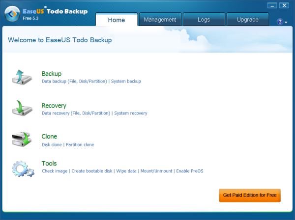
Clicking “System Backup,” you’ll choose the partition you want to back up. This will most likely be your C: drive. EaseUS Todo Backup Free will already have the default backup folder set as the destination.
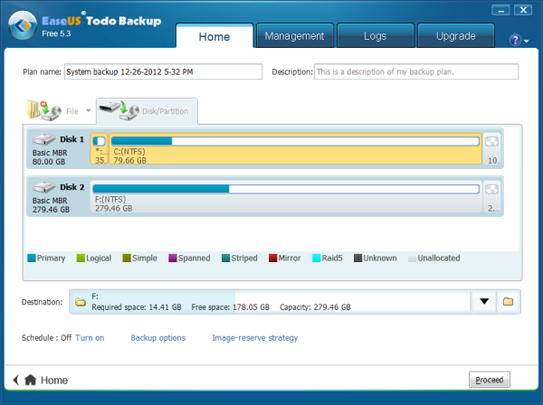
Click Proceed, and in an hour or so you’ll have a working image of your hard drive. If you just want to backup a few files or folders, EaseUS Todo Backup Free can do that, too. On the main screen, click “Data backup” and you can choose individual files and folders.
- Restoring
In order to restore, you’ll need to create a bootable disk. You can do this from within the software.
Initially, EaseUS Todo Backup couldn’t locate my USB hard drive during recovery. I found out this was because the bootable DVD didn’t have the correct USB driver for my hardware. After contacting EaseUS they said the only solution would be to upgrade to Todo Backup Home edition, which supports creating a Win PE bootable disk and might have the correct drivers.
I eventually changed computers, which solved the problem.
So if you’re backing up to a USB drive, just be aware it might not be supported in the boot recovery mode. Test it first and you’ll save yourself a headache.
The boot disk will let you choose to start EaseUS Todo Backup or continue booting Windows. Once started, you’ll be given the option to recovery your data.
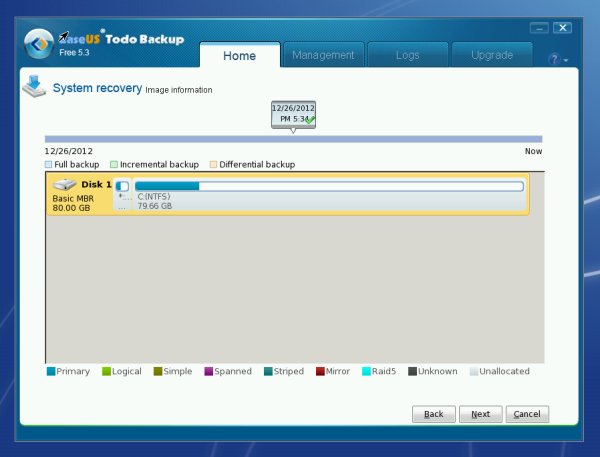
Features
- Mount System Backups
System backups can be mounted, which can then be accessed like normal drives in Windows.
- Disk/Partition Clone
EaseUS Todo Backup Free supports cloning your drives. This is useful when you want to migrate your system to a new hard drive.
2.Oops! Backup
Pros:
Capable of running several backup jobs at same time.
Auto Versioning functionality
Fast search facilities
Intuitive Interface
Backs up entire Windows user folder
Cons:
No full disk imaging.
No Boot Disk or Boot- Time recovery options.
Lacks differential backups.
Lack cloud storage
Working of Oops! Backup Software:
- Backing Up
Right off the bat, Oops!Backup pops up a browser window, asking users to configure the software and gives an email address to ask any questions – a nice touch. When first started, the Setup Wizard will prompt you to create a backup plan, or restore your files (if you’re migrating to a new computer).
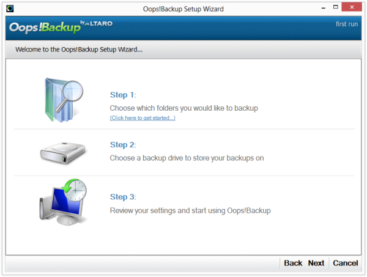
Oops!Backup backs up the entire user folder by default, which is great. This takes all the guesswork out of choosing which files to back up. It’s also something I’ve been saying all backup software should be doing – keep it simple!
Next, it automatically scans for connected drives, and gives a recommendation. With my setup, it recommended my external hard drive which is exactly where I wanted my backups to be stored.
The default backup frequency is once every hour, hence the “Time Machine for Windows” slogan.
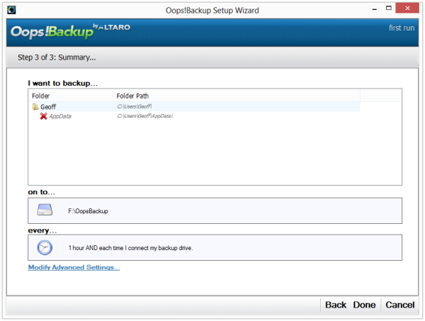
Oops!Backup has a lot of advanced settings to choose from. Here are the most important ones:
- “Plug and protect” to start backups automatically upon connecting the backup drive
- Copy locked and open files
- Automatic purging of old backups
- Storage limit for old versions
Oops!Backup had no problems backing up all my user data. When it was finished, any changes to my files were also backed up (once every hour, or when clicking the “Backup Now” button).
- Restoring I found restoring data to be very easy. I was able to browse snapshots, find the data I wanted to restore, and with the click of a button restore my files.
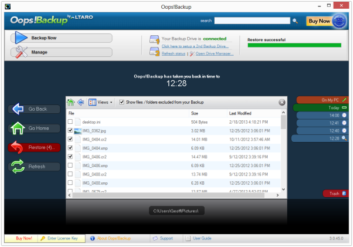
Features
- BackInTime Technology
This is what enables you to “travel back in time” to find and recover changes made to any file.
- Silent File Versioning
Oops!Backup works silently in the background, tracking changes you make to photos, MS Office documents, and other files. When changes are detected it automatically backs up and versions them for you.
- Plug and Protect
Whenever you connect your backup drive, Oops!Backup will immediately start backing up any changes.
- ReverseDelta Technology
Basically, this only backs up changes to each version of an altered file, rather than the whole file each time it changes. It also ensures that the latest version of a file is always a full backup, and no delta files will be required to rebuild it. Why? Because in most restore scenarios, the file you usually need is the latest one. And the more delta files you need to go through to rebuild it, the higher the chances for errors. This fixes that. Another way to describe this is “reverse incremental.”
3.BackBlaze
Pros:
Cloud based Backup.
Fast backup speed.
Unlimited storage space.
Versioning.
Intuitive Backups.
Unlimited online backup.
Cons:
No support of mobile devices.
No backup of network drives.
Restoring only using web interface.
Working of Backblaze Backup Software:
- Backing Up
After installing, Backblaze automatically scans your hard drive for files to back up. It will also backup all connected USB drives at the time of the install (you can add more later). Backups are automatic and continuous; your files are backed up constantly throughout the day.
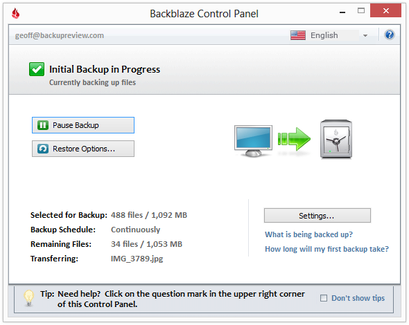
Backblaze also has an option to “Transfer Backup State.” This lets you transfer your account to a new computer, without having to re-upload all your files again.
Restoring Files
Option 1: Download Your Files
When your computer crashes or you lose data, getting your files back is the first thing on your mind. Fortunately, Backblaze makes this easy.
You can download your files through the web interface. Your files will be compressed to a .zip before downloading, and for 100GB worth of data this will take about 4 days (according to my speed tests).
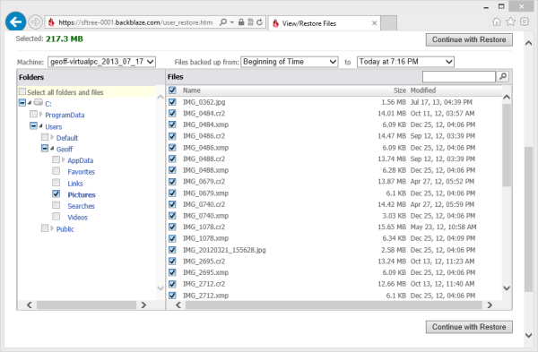
Option 2: Get Your Files Mailed to You
If you have a large amount of data, it might be faster to have them mailed to you on a USB flash drive or external hard drive. The price for the USB flash drive is $99, and it holds a maximum of 53GB. The external hard drive costs $189, and it holds a maximum of 3TB. Backblaze says it can take 2-3 days to mail the drive. With overnight shipping, that’s up to 4 days before you can get your data back. At this point it might be faster to download them, depending on your internet connection speed – something to keep in mind.
Preferences and Settings
Although Backblaze is very good at picking the best backup plan, there are a ton of settings to customize if you want to.
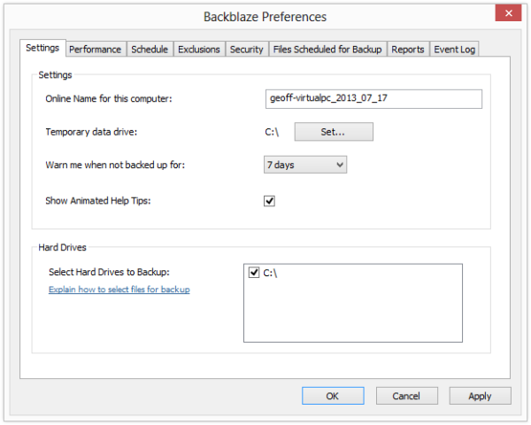
Performance Settings
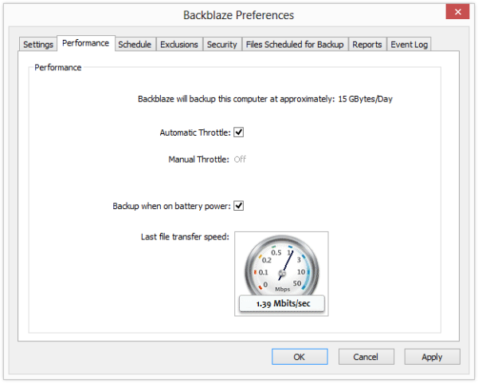
Scheduling Options
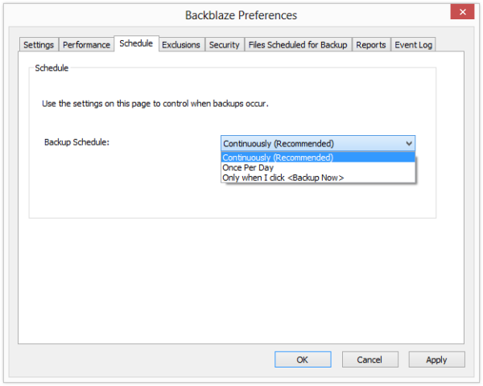
Excluding Files You can exclude folders, file types, and files over a certain size. There are a lot of exclusions already set, mostly system files and other files you wouldn’t normally back up. The default max file size is 4GB. This can be changed anywhere from 5MB to 25GB, or turned off with “no limit” (like I prefer).
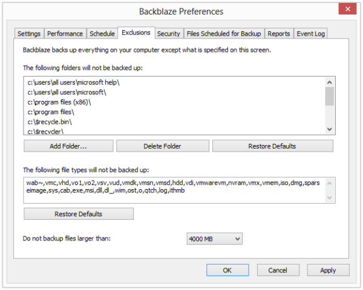
How Long are Deleted Files Kept?
Deleted files are kept for 30 days. In other words: if you delete a file on your computer, you have 30 days to recover it before it’s deleted from the Backblaze servers.
What About Multiple Versions of Files?
If a file changes, Backblaze will keep up to 34 versions.
Backblaze will backup:
- One version every hour, for the last 24 hours
- One version every day, for the last 7 days
- One version every week, for the last 4 weeks
This way, you can restore files even if they’ve been overwritten by newer files (such as a text document you’re working on).